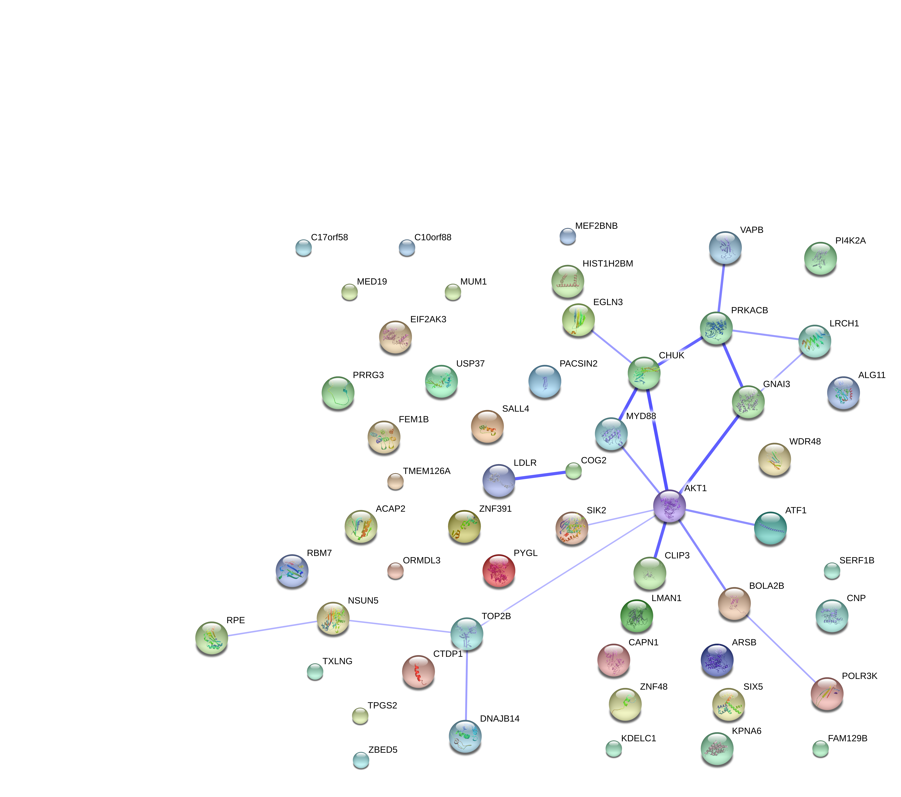
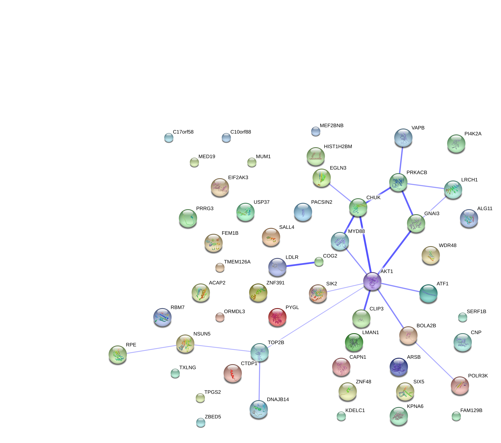

Individual differences in CV and mean
Joyce Hsiao
2015-10-13
Last updated: 2015-10-19
Code version: 6b16d0b7ff64ea109c14ebf7c3bfbb5cebd4dec8
Objective
Previously, we compared normalized coefficient of variations across individuals. Here, we will also compare the mean gene expression across individuals, using single cell sequencing data and bulk RNA-seq data.
It would be interesting to learn the possible overlap or non-overlap between the genes that we observed significant individual differences in coefficient of variations versus those different in mean gene expression levels across cells.
Set up
library("data.table")
library("dplyr")
library("limma")
library("edgeR")
library("ggplot2")
library("grid")
theme_set(theme_bw(base_size = 12))
source("functions.R")Prepare data
Input annotation of only QC-filtered single cells
anno_qc <- read.table("../data/annotation-filter.txt", header = TRUE,
stringsAsFactors = FALSE)
head(anno_qc) individual replicate well batch sample_id
1 NA19098 r1 A01 NA19098.r1 NA19098.r1.A01
2 NA19098 r1 A02 NA19098.r1 NA19098.r1.A02
3 NA19098 r1 A04 NA19098.r1 NA19098.r1.A04
4 NA19098 r1 A05 NA19098.r1 NA19098.r1.A05
5 NA19098 r1 A06 NA19098.r1 NA19098.r1.A06
6 NA19098 r1 A07 NA19098.r1 NA19098.r1.A07Input molecule counts that are filtered, transformed, and also processed to remove unwanted variation from batch effet. ERCC genes are also removed.
molecules_qc <- read.table("../data/molecules-final.txt", header = TRUE, stringsAsFactors = FALSE)Input moleclule counts before log2 CPM transformation.
molecules_filter <- read.table("../data/molecules-filter.txt", header = TRUE, stringsAsFactors = FALSE)
molecules_filter <- molecules_filter[which(rownames(molecules_filter) %in% rownames(molecules_qc)), ]
stopifnot(dim(molecules_filter) == dim(molecules_qc))Compare coefficient of variation
Compute per batch coefficient of variation.
Include only genes with positive coefficient of variation. Some genes in this data may have zero coefficient of variation, because we include gene with more than 0 count across all cells.
molecules_cv_batch <-
lapply(1:length(unique(anno_qc$batch)), function(per_batch) {
molecules_per_batch <- 2^molecules_qc[ , unique(anno_qc$batch) == unique(anno_qc$batch)[per_batch] ]
mean_per_gene <- apply(molecules_per_batch, 1, mean, na.rm = TRUE)
sd_per_gene <- apply(molecules_per_batch, 1, sd, na.rm = TRUE)
cv_per_gene <- data.frame(mean = mean_per_gene,
sd = sd_per_gene,
cv = sd_per_gene/mean_per_gene)
rownames(cv_per_gene) <- rownames(molecules_qc)
cv_per_gene <- cv_per_gene[rowSums(is.na(cv_per_gene)) == 0, ]
cv_per_gene$batch <- unique(anno_qc$batch)[per_batch]
# Add sparsity percent
molecules_count <- molecules_filter[ , unique(anno_qc$batch) == unique(anno_qc$batch)[per_batch]]
cv_per_gene$sparse <- rowMeans(as.matrix(molecules_count) == 0)
return(cv_per_gene)
})
names(molecules_cv_batch) <- unique(anno_qc$batch)
dim(molecules_cv_batch[[1]])[1] 10483 5Merge summary data.frames.
df_plot <- do.call(rbind, molecules_cv_batch)Compute rolling medians.
library(zoo)
# Compute a data-wide coefficient of variation on CPM normalized counts.
data_cv <- apply(2^molecules_qc, 1, sd)/apply(2^molecules_qc, 1, mean)
# Order of genes by mean expression levels
order_gene <- order(apply(2^molecules_qc, 1, mean))
# Rolling medians of log10 squared CV by mean expression levels
roll_medians <- rollapply(log10(data_cv^2)[order_gene], width = 50, by = 25,
FUN = median, fill = list("extend", "extend", "NA") )
ii_na <- which( is.na(roll_medians) )
roll_medians[ii_na] <- median( log10(data_cv^2)[order_gene][ii_na] )
names(roll_medians) <- rownames(molecules_qc)[order_gene]
# re-order rolling medians
reorder_gene <- match(rownames(molecules_qc), names(roll_medians) )
head(reorder_gene)[1] 225 3650 4564 6158 3352 1963roll_medians <- roll_medians[ reorder_gene ]
head(names(roll_medians))[1] "ENSG00000237683" "ENSG00000188976" "ENSG00000187608" "ENSG00000188157"
[5] "ENSG00000078808" "ENSG00000176022"head(rownames(molecules_qc))[1] "ENSG00000237683" "ENSG00000188976" "ENSG00000187608" "ENSG00000188157"
[5] "ENSG00000078808" "ENSG00000176022"Compute adjusted coefficient of variation.
# adjusted coefficient of variation on log10 scale
log10cv2_adj <-
lapply(1:length(molecules_cv_batch), function(per_batch) {
foo <- log10(molecules_cv_batch[[per_batch]]$cv^2) - roll_medians
return(foo)
})
df_plot$log10cv2_adj <- do.call(c, log10cv2_adj)Compare adjusted CVs
library(limma)
df_limma <- matrix(df_plot$log10cv2_adj,
nrow = nrow(molecules_qc), ncol = 9, byrow = FALSE)
design <- data.frame(individual = factor(rep(unique(anno_qc$individual), each = 3) ),
rep = factor(rep(c(1:3), times = 3)) )
colnames(df_limma) <- with(design, paste0(individual, rep))
fit_limma <- lmFit(df_limma, design = model.matrix( ~ individual, data = design))
fit_limma <- eBayes(fit_limma)False discover control adjustment.
F.p.adj <- p.adjust(fit_limma$F.p.value, method = "fdr")Cutoffs
df_cuts <- data.frame(cuts = c(.001, .01, .05, .1, .15, .2))
df_cuts$sig_count <- sapply(1:6, function(per_cut) {
sum(F.p.adj < df_cuts$cuts[per_cut] )
})
df_cuts cuts sig_count
1 0.001 24
2 0.010 54
3 0.050 115
4 0.100 179
5 0.150 290
6 0.200 423Compare mean expression levels.
Single-cell sequencing data
Almost all of the genes came out to be statistically significant due the large sample size (about ~70 sample points per replicate, per individual).
fit_limma_mean <- lmFit(molecules_qc,
design = model.matrix(~factor(individual), data = anno_qc) )
fit_limma_mean <- eBayes(fit_limma_mean)
summary(fit_limma_mean$F.p.value) Min. 1st Qu. Median Mean 3rd Qu. Max.
0.000e+00 0.000e+00 0.000e+00 1.985e-194 0.000e+00 1.180e-190 Histogram of p-values.
hist(-log10(fit_limma_mean$F.p.value),
main = "F-test p-values comparing mean expression", breaks = 100)
FDR
padj_mean_single <- p.adjust(fit_limma_mean$F.p.value, method = "fdr")
summary(padj_mean_single) Min. 1st Qu. Median Mean 3rd Qu. Max.
0.000e+00 0.000e+00 0.000e+00 1.985e-194 0.000e+00 1.180e-190 Mean versus coefficient of variation comparisons
plot(x = -log10(fit_limma_mean$F.p.value),
y = -log10(fit_limma$F.p.value),
xlab = "-log10 F-test p-value comparing means",
ylab = "-log10 F-test p-value compare adjusted CV",
main = "Unadjusted F-test p-values")
abline( h = -log10(.01), col = "red")
plot(x = -log10(padj_mean_single),
y = -log10(F.p.adj),
xlab = "-log10 FDR comparing means",
ylab = "-log10 FDSR compare adjusted CV",
main = "FDR")
abline( h = -log10(.01), col = "red")
abline( h = -log10(.05), col = "red")
Overlap of the significant genes
*Adjusted p-value cut-offs
cuts <- c(.001, .01, .05, .1, .15, .2)
both_table <- lapply(1:6, function(per_cut) {
table(F.p.adj < df_cuts$cuts[per_cut],
padj_mean_single < df_cuts$cut[per_cut])
})
names(both_table) <- cuts
both_table$`0.001`
TRUE
FALSE 10459
TRUE 24
$`0.01`
TRUE
FALSE 10429
TRUE 54
$`0.05`
TRUE
FALSE 10368
TRUE 115
$`0.1`
TRUE
FALSE 10304
TRUE 179
$`0.15`
TRUE
FALSE 10193
TRUE 290
$`0.2`
TRUE
FALSE 10060
TRUE 423*Ranks of adjusted p-values
plot(x = rank(-log10(padj_mean_single)),
y = rank(-log10(F.p.adj)),
xlab = "rank of -log10 FDR comparing means",
ylab = "rank of -log10 FDR compare adjusted CV",
main = "FDR")
df_compare <-
data.frame(mean = rowMeans( as.matrix(
do.call(cbind, lapply(molecules_cv_batch, "[[", 1) ) ) ),
cv2 = rowMeans( as.matrix(
do.call(cbind, lapply(molecules_cv_batch, "[[", 3) ) )^2 ),
adj_cv2 = rowMeans( 10^as.matrix(
do.call(cbind, log10cv2_adj) ) ) )
library(broman)
crayon <- brocolors("crayons")
with(df_compare, plot(x = log10(mean), y = cv2, pch = 1, cex = 1, col = "grey50",
lwd = .5,
ylab = "average squared coeffcient of variations \n across samples",
xlab = "log10 average of mean CPM across samples") )
with(df_compare[F.p.adj < .2, ], points(x = log10(mean), y = cv2, pch = 16, cex = .6,
col = crayon["Tumbleweed"]) )
with(df_compare[F.p.adj < .1, ], points(x = log10(mean), y = cv2, pch = 16, cex = .6,
col = crayon["Orange"]) )
with(df_compare[F.p.adj < .01, ], points(x = log10(mean), y = cv2, pch = 16, cex = .6,
col = crayon["Scarlet"]) )
title(main = "Avg. Squred CV vs. log10(Avg. mean count)")
legend("topright", pch = c(1, 16, 16, 16),
legend = c("All genes", "Adj p-value < .2",
"Adj p-value < .1", "Adj p-value < .01"),
col = c("grey50", crayon[c("Tumbleweed", "Orange", "Scarlet")]),
bty = "n")
with(df_compare, plot(x = log10(mean), y = adj_cv2, pch = 1, cex = 1, col = "grey50",
lwd = .5,
ylab = "average squared coeffcient of variations \n across samples",
xlab = "log10 average of mean CPM across samples") )
with(df_compare[F.p.adj < .2, ], points(x = log10(mean), y = adj_cv2, pch = 16, cex = .6,
col = crayon["Tumbleweed"]) )
with(df_compare[F.p.adj < .1, ], points(x = log10(mean), y = adj_cv2, pch = 16, cex = .6,
col = crayon["Orange"]) )
with(df_compare[F.p.adj < .01, ], points(x = log10(mean), y = adj_cv2, pch = 16, cex = .6,
col = crayon["Scarlet"]) )
title(main = "Avg. Adjusted Squred CV vs. log10(Avg. mean count)")
legend("topright", pch = c(1, 16, 16, 16),
legend = c("All genes", "Adj p-value < .2",
"Adj p-value < .1", "Adj p-value < .01"),
col = c("grey50", crayon[c("Tumbleweed", "Orange", "Scarlet")]),
bty = "n")
Heatmap
library(mygene)
gene_symbols <- getGenes(rownames(molecules_qc),
fields = c("name", "symbol") ) [ , c("query", "symbol")]
head(gene_symbols)DataFrame with 6 rows and 2 columns
query symbol
<character> <character>
1 ENSG00000237683 NA
2 ENSG00000188976 NOC2L
3 ENSG00000187608 ISG15
4 ENSG00000188157 AGRN
5 ENSG00000078808 SDF4
6 ENSG00000176022 B3GALT6library(gplots)
order_cv <- order(F.p.adj)[F.p.adj < .01]
my_palette <- colorRampPalette(c("red", "yellow", "blue"))(n = 299)
heatmap.2(as.matrix(molecules_qc[order_cv, ]),
symm = FALSE, col = my_palette,
Colv = "NA", trace = "none", labRow = gene_symbols$symbol[ order_cv ])
Use a different method to get gene ID.
library("biomaRt")
ensembl <- useMart(host = "grch37.ensembl.org",
biomart = "ENSEMBL_MART_ENSEMBL",
dataset = "hsapiens_gene_ensembl")
differential_CV_genes_info <- getBM(attributes = c("ensembl_gene_id", "chromosome_name",
"external_gene_name", "transcript_count",
"description"),
filters = "ensembl_gene_id",
values = rownames(molecules_qc[order_cv, ]),
mart = ensembl)
differential_CV_genes_info ensembl_gene_id chromosome_name external_gene_name transcript_count
1 ENSG00000014216 11 CAPN1 28
2 ENSG00000025800 1 KPNA6 6
3 ENSG00000060069 18 CTDP1 7
4 ENSG00000065135 1 GNAI3 1
5 ENSG00000074695 18 LMAN1 5
6 ENSG00000076053 11 RBM7 8
7 ENSG00000077097 3 TOP2B 9
8 ENSG00000086712 X TXLNG 3
9 ENSG00000100266 22 PACSIN2 11
10 ENSG00000100504 14 PYGL 7
11 ENSG00000101115 20 SALL4 5
12 ENSG00000105270 19 CLIP3 6
13 ENSG00000113273 5 ARSB 6
14 ENSG00000114331 3 ACAP2 14
15 ENSG00000114742 3 WDR48 13
16 ENSG00000119965 10 C10orf88 4
17 ENSG00000123268 12 ATF1 6
18 ENSG00000124164 20 VAPB 6
19 ENSG00000124613 6 ZNF391 4
20 ENSG00000129521 14 EGLN3 11
21 ENSG00000130032 X PRRG3 5
22 ENSG00000130164 19 LDLR 14
23 ENSG00000130305 7 NSUN5 7
24 ENSG00000134779 18 TPGS2 19
25 ENSG00000134901 13 KDELC1 4
26 ENSG00000135775 1 COG2 11
27 ENSG00000135913 2 USP37 11
28 ENSG00000136141 13 LRCH1 6
29 ENSG00000136830 9 FAM129B 7
30 ENSG00000142208 14 AKT1 18
31 ENSG00000142875 1 PRKACB 16
32 ENSG00000155252 10 PI4K2A 2
33 ENSG00000156603 11 MED19 4
34 ENSG00000160953 19 MUM1 18
35 ENSG00000161980 16 POLR3K 2
36 ENSG00000164031 4 DNAJB14 11
37 ENSG00000169018 15 FEM1B 4
38 ENSG00000169627 16 BOLA2B 4
39 ENSG00000170145 11 SIK2 2
40 ENSG00000171202 11 TMEM126A 6
41 ENSG00000172057 17 ORMDL3 8
42 ENSG00000172071 2 EIF2AK3 6
43 ENSG00000172936 3 MYD88 11
44 ENSG00000173786 17 CNP 13
45 ENSG00000177045 19 SIX5 3
46 ENSG00000180035 16 ZNF48 4
47 ENSG00000186665 17 C17orf58 3
48 ENSG00000196374 6 HIST1H2BM 1
49 ENSG00000197713 2 RPE 17
50 ENSG00000205572 5 SERF1B 8
51 ENSG00000213341 10 CHUK 4
52 ENSG00000236287 11 ZBED5 10
53 ENSG00000253710 13 ALG11 3
54 ENSG00000254901 19 MEF2BNB 9
description
1 calpain 1, (mu/I) large subunit [Source:HGNC Symbol;Acc:1476]
2 karyopherin alpha 6 (importin alpha 7) [Source:HGNC Symbol;Acc:6399]
3 CTD (carboxy-terminal domain, RNA polymerase II, polypeptide A) phosphatase, subunit 1 [Source:HGNC Symbol;Acc:2498]
4 guanine nucleotide binding protein (G protein), alpha inhibiting activity polypeptide 3 [Source:HGNC Symbol;Acc:4387]
5 lectin, mannose-binding, 1 [Source:HGNC Symbol;Acc:6631]
6 RNA binding motif protein 7 [Source:HGNC Symbol;Acc:9904]
7 topoisomerase (DNA) II beta 180kDa [Source:HGNC Symbol;Acc:11990]
8 taxilin gamma [Source:HGNC Symbol;Acc:18578]
9 protein kinase C and casein kinase substrate in neurons 2 [Source:HGNC Symbol;Acc:8571]
10 phosphorylase, glycogen, liver [Source:HGNC Symbol;Acc:9725]
11 spalt-like transcription factor 4 [Source:HGNC Symbol;Acc:15924]
12 CAP-GLY domain containing linker protein 3 [Source:HGNC Symbol;Acc:24314]
13 arylsulfatase B [Source:HGNC Symbol;Acc:714]
14 ArfGAP with coiled-coil, ankyrin repeat and PH domains 2 [Source:HGNC Symbol;Acc:16469]
15 WD repeat domain 48 [Source:HGNC Symbol;Acc:30914]
16 chromosome 10 open reading frame 88 [Source:HGNC Symbol;Acc:25822]
17 activating transcription factor 1 [Source:HGNC Symbol;Acc:783]
18 VAMP (vesicle-associated membrane protein)-associated protein B and C [Source:HGNC Symbol;Acc:12649]
19 zinc finger protein 391 [Source:HGNC Symbol;Acc:18779]
20 egl-9 family hypoxia-inducible factor 3 [Source:HGNC Symbol;Acc:14661]
21 proline rich Gla (G-carboxyglutamic acid) 3 (transmembrane) [Source:HGNC Symbol;Acc:30798]
22 low density lipoprotein receptor [Source:HGNC Symbol;Acc:6547]
23 NOP2/Sun domain family, member 5 [Source:HGNC Symbol;Acc:16385]
24 tubulin polyglutamylase complex subunit 2 [Source:HGNC Symbol;Acc:24561]
25 KDEL (Lys-Asp-Glu-Leu) containing 1 [Source:HGNC Symbol;Acc:19350]
26 component of oligomeric golgi complex 2 [Source:HGNC Symbol;Acc:6546]
27 ubiquitin specific peptidase 37 [Source:HGNC Symbol;Acc:20063]
28 leucine-rich repeats and calponin homology (CH) domain containing 1 [Source:HGNC Symbol;Acc:20309]
29 family with sequence similarity 129, member B [Source:HGNC Symbol;Acc:25282]
30 v-akt murine thymoma viral oncogene homolog 1 [Source:HGNC Symbol;Acc:391]
31 protein kinase, cAMP-dependent, catalytic, beta [Source:HGNC Symbol;Acc:9381]
32 phosphatidylinositol 4-kinase type 2 alpha [Source:HGNC Symbol;Acc:30031]
33 mediator complex subunit 19 [Source:HGNC Symbol;Acc:29600]
34 melanoma associated antigen (mutated) 1 [Source:HGNC Symbol;Acc:29641]
35 polymerase (RNA) III (DNA directed) polypeptide K, 12.3 kDa [Source:HGNC Symbol;Acc:14121]
36 DnaJ (Hsp40) homolog, subfamily B, member 14 [Source:HGNC Symbol;Acc:25881]
37 fem-1 homolog b (C. elegans) [Source:HGNC Symbol;Acc:3649]
38 bolA family member 2B [Source:HGNC Symbol;Acc:32479]
39 salt-inducible kinase 2 [Source:HGNC Symbol;Acc:21680]
40 transmembrane protein 126A [Source:HGNC Symbol;Acc:25382]
41 ORM1-like 3 (S. cerevisiae) [Source:HGNC Symbol;Acc:16038]
42 eukaryotic translation initiation factor 2-alpha kinase 3 [Source:HGNC Symbol;Acc:3255]
43 myeloid differentiation primary response 88 [Source:HGNC Symbol;Acc:7562]
44 2',3'-cyclic nucleotide 3' phosphodiesterase [Source:HGNC Symbol;Acc:2158]
45 SIX homeobox 5 [Source:HGNC Symbol;Acc:10891]
46 zinc finger protein 48 [Source:HGNC Symbol;Acc:13114]
47 chromosome 17 open reading frame 58 [Source:HGNC Symbol;Acc:27568]
48 histone cluster 1, H2bm [Source:HGNC Symbol;Acc:4750]
49 ribulose-5-phosphate-3-epimerase [Source:HGNC Symbol;Acc:10293]
50 small EDRK-rich factor 1B (centromeric) [Source:HGNC Symbol;Acc:10756]
51 conserved helix-loop-helix ubiquitous kinase [Source:HGNC Symbol;Acc:1974]
52 zinc finger, BED-type containing 5 [Source:HGNC Symbol;Acc:30803]
53 ALG11, alpha-1,2-mannosyltransferase [Source:HGNC Symbol;Acc:32456]
54 MEF2B neighbor [Source:HGNC Symbol;Acc:37247]Use string analysis data base to look for protein protein interaction of these differential CV genes.
This is the confidence view. Stronger associations are represented by thicker lines.  This is the evidence view. Different line colors represent the types of evidence for the association. 
This is the evidence view. Different line colors represent the types of evidence for the association. 
Session information
sessionInfo()R version 3.2.0 (2015-04-16)
Platform: x86_64-unknown-linux-gnu (64-bit)
locale:
[1] LC_CTYPE=en_US.UTF-8 LC_NUMERIC=C
[3] LC_TIME=en_US.UTF-8 LC_COLLATE=en_US.UTF-8
[5] LC_MONETARY=en_US.UTF-8 LC_MESSAGES=en_US.UTF-8
[7] LC_PAPER=en_US.UTF-8 LC_NAME=C
[9] LC_ADDRESS=C LC_TELEPHONE=C
[11] LC_MEASUREMENT=en_US.UTF-8 LC_IDENTIFICATION=C
attached base packages:
[1] stats4 parallel grid stats graphics grDevices utils
[8] datasets methods base
other attached packages:
[1] biomaRt_2.24.0 gplots_2.17.0 mygene_1.2.3
[4] GenomicFeatures_1.20.1 AnnotationDbi_1.30.1 Biobase_2.28.0
[7] GenomicRanges_1.20.5 GenomeInfoDb_1.4.0 IRanges_2.2.4
[10] S4Vectors_0.6.0 BiocGenerics_0.14.0 broman_0.59-5
[13] zoo_1.7-12 ggplot2_1.0.1 edgeR_3.10.2
[16] limma_3.24.9 dplyr_0.4.2 data.table_1.9.4
[19] knitr_1.10.5
loaded via a namespace (and not attached):
[1] Rcpp_0.12.0 lattice_0.20-31
[3] gtools_3.5.0 Rsamtools_1.20.4
[5] Biostrings_2.36.1 assertthat_0.1
[7] digest_0.6.8 R6_2.1.1
[9] plyr_1.8.3 chron_2.3-45
[11] futile.options_1.0.0 acepack_1.3-3.3
[13] RSQLite_1.0.0 evaluate_0.7
[15] sqldf_0.4-10 httr_0.6.1
[17] zlibbioc_1.14.0 gdata_2.16.1
[19] rpart_4.1-9 gsubfn_0.6-6
[21] rmarkdown_0.6.1 proto_0.3-10
[23] splines_3.2.0 BiocParallel_1.2.2
[25] foreign_0.8-63 stringr_1.0.0
[27] RCurl_1.95-4.6 munsell_0.4.2
[29] rtracklayer_1.28.4 htmltools_0.2.6
[31] nnet_7.3-9 gridExtra_0.9.1
[33] Hmisc_3.16-0 XML_3.98-1.2
[35] GenomicAlignments_1.4.1 MASS_7.3-40
[37] bitops_1.0-6 jsonlite_0.9.16
[39] gtable_0.1.2 DBI_0.3.1
[41] magrittr_1.5 formatR_1.2
[43] scales_0.2.4 KernSmooth_2.23-14
[45] stringi_0.4-1 XVector_0.8.0
[47] reshape2_1.4.1 latticeExtra_0.6-26
[49] futile.logger_1.4.1 Formula_1.2-1
[51] RColorBrewer_1.1-2 lambda.r_1.1.7
[53] tools_3.2.0 survival_2.38-1
[55] yaml_2.1.13 colorspace_1.2-6
[57] cluster_2.0.1 caTools_1.17.1